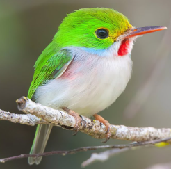
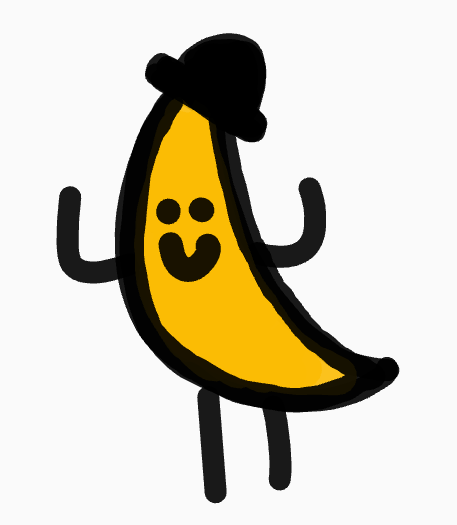

Sometimes, when somebody looks at my badminton rackets, they might ask something along the lines of “Do you play tennis?” I can see where they got the assumption from, but there is a big difference between the two sports. Badminton feels underappreciated in the US, with not a lot of places and courts to play in and a majority of people playing being Asian. In badminton, you have to control a shuttlecock and hit it over the net whilst keeping it in bounds and trying to make your opponent miss. It is a blend of reaction, movement, and control at the same time. I enjoy playing it a lot, and wish more people would learn about it.
 Birbism is a significant part of my life, and it is a religion where we pray to and worship birbs. Birbs are majestic angelic beings, bringing joy and peace to the world, working for the all-knowing Birb Deity. We pray to the Birb Deity, and the Birb Deity shall grant us with gifts and wishes, including good luck and fortune. The Birb Deity also punishes sinners who commit sins and harm the birbs. I shall implore you to consider joining our religion, as it is very simple and doesn’t take time out of your life. For more info, check the official birbism website
My identity is somewhat tied to the long yellow fruit known as a ‘banana’. This isn’t the case because it like to eat bananas, but because of a relatively short story about a hand-drawn character I made myself. My link to bananas comes from a drawing I made in late seventh grade of a smiling banana with arms and legs, which I nicknamed ‘Bananaman’. This hand-drawn character made its way into random drawings, and eventually all my friends started calling me bananaman as a joke. I accepted this nickname, and even though nobody calls me this anymore, I still occasionally make banana-themed jokes, and the legacy of the nickname lives on in some of my online accounts.